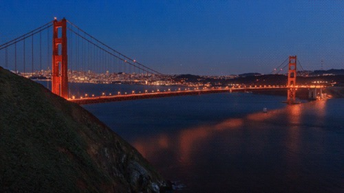

San Francisco
San Francisco is a great location to visit with many landmarks, including the Golden Gate Bridge and Alcatraz. Located in Northern California, San Francisco is one of the most populated cities in California with a population of 815,000. The city is also a center of culture and industry. San Francisco is home to a thriving tech industry.
San Francisco has many trails and parks where you can hike or enjoy a walk. The Presidio is a large park with hiking trails and paths surrounding the Golden Gate Bridge area. One can see picturesque views of the bay and its wildlife.
Photo Gallery


Florence, Italy

Florence is located north of Rome and is the capital of Italy’s Tuscany region. One of its most iconic landmarks is the Duomo, a cathedral with a terracotta-tiled dome engineered by Brunelleschi. It is also home to the Uffizi gallery, which hosts Michelangelo’s famous “David” sculpture.
Florence is the capital city of the region of Tuscany in Central Italy. It is also the most populated city in Tuscany, with 360,930 inhabitants in 2023, and 984,991 in its metropolitan area. Florence was a centre of medieval European trade and finance and one of the wealthiest cities of that era It is considered by many academics to have been the birthplace of the Renaissance, becoming a major artistic, cultural, commercial, political, economic and financial center
Photo Gallery


Barcelona

Barcelona, is a beautiful city on the Northeastern coast of Spain that is the byproduct of a rich and artistic history with modern infrastructure. One of the main attractions of the city is its gorgeous architecture, often the work of world renowned architects such as Antoni Gaudi. Some of the most notable works are the modern Basilica of La Sagrada Familia, and the tranquil and eloquent Park Güell.
Much of Barcelona’s charm comes down to local culture, from diverse culinary offerings, to the sunny vacation-ridden atmosphere of the beaches, and even the symbolism of nationalism and independence that Barcelona residents display. The passion of the locals is unwavering, including in famous soccer matches by one of the sports greatest clubs: F.C. Barcelona, and in numerous local artistry events. It is no wonder why many travelers to Spain feel rejuvenated and fortunate enough to have experienced the city’s irresistibly strong culture and atmosphere.
Photo Gallery


London

Milktea is a Scottish fold with a personality of a princess. She loves her veggies and refuses to eat anything dropped on the ground. She makes it clear when she has a demand of any sort by complaining in a loud, distinguished manner. If what she says could be translated, it probably would be, “This is atrocious, the water container has been empty for the 3rd time this week. I want to see the manager.”
Despite her cuteness and royalty, she actually suffers from a genetic disorder intentionally brought upon by humans. I highly advise against keeping a Scottish fold because they are in constant pain when they reach around 2 years old. Cartilage accumulates around her paw joints and tail joints and it becomes painful for them to even walk. She is living evidence of human’s cruelty of breeding animals to look pretty while sacrificing the animals’ health.
Photo Gallery